Welcome back!
Ready to keep improving your game.
Cloudflare analysisOffline
Your latest analysis
Quick actions
New analysis
Upload or record your swing
Manual review
Choose your swing source
Start from a saved clip or record a new one. Use a steady frame with the full body visible.
Recording setup
3 checks01
Full body inside the frame.
02
Good light, low shadows.
03
Face-on or down-the-line view.
Manual phase review
No video loaded
Analyzing swingWaiting for engine...
0.00s0.00s
Key phases
Swing report
Manual review summary
Coming later
This version keeps the full video workflow and manual review. Automatic swing analysis will be connected with GLAB in the next phase.
Session notes
My swings
Saved on this device
Compare
Manual comparison
Select two swings
Compare phase frames, timing gaps and report notes.
Profile
Preferences and device data
SL
Swing Lab User
Local prototype mode